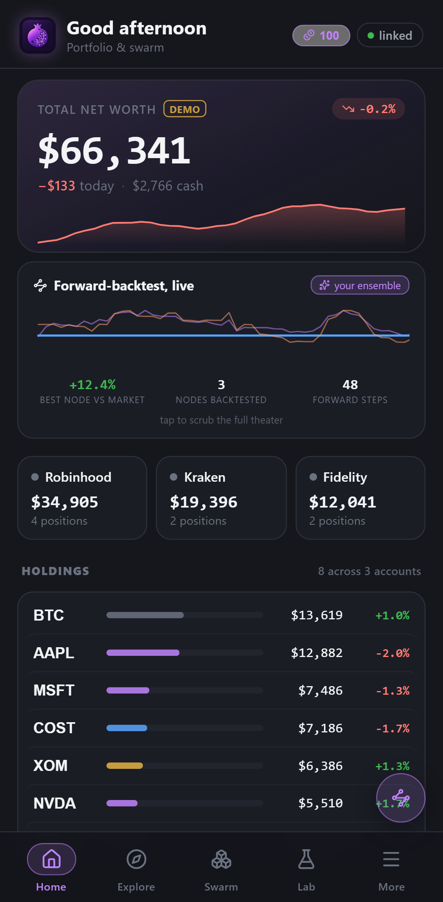
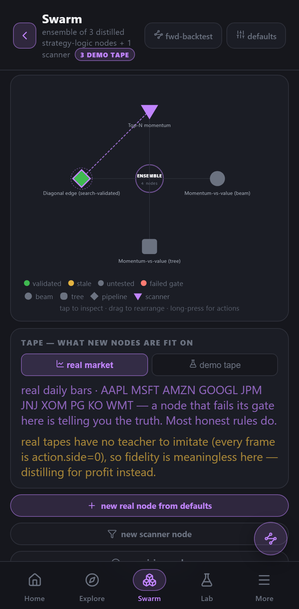
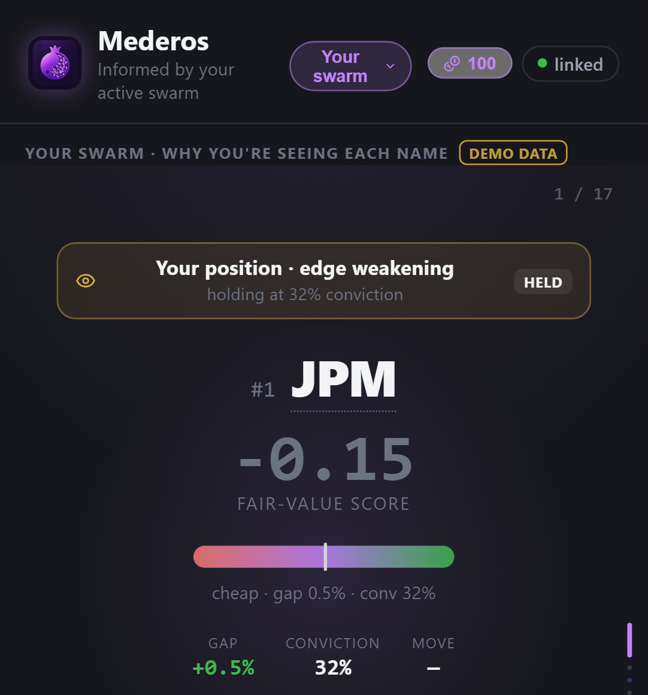
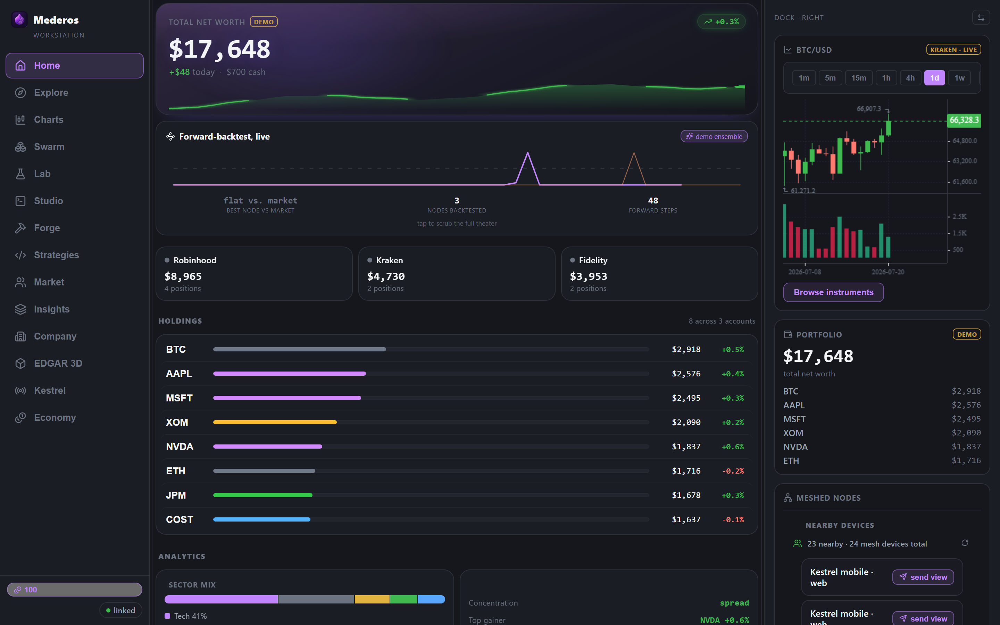
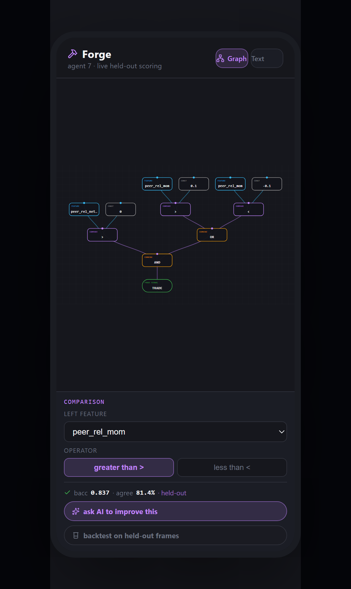

The full desk — live charting, multi-brokerage execution, an evolutionary strategy engine — on every screen you own. Then we took the best idea in gaming: free to start, addictive to master. The depth costs nothing up front. The edge is the game.
Live charting, multi-brokerage execution, and the full strategy workbench — on your phone, your laptop, and the web, meshed into one account. Start a fit on the couch; it's running on your desk before you sit down.
The best idea gaming ever had: the depth is free to start. No paywall on the tools — just progression, currencies, and a strategy collection you grow by playing. The grind isn't busywork; it's R&D that compounds into real edge.
Under the game layer sits a trading language of our own, an evolutionary engine, and a validation gate that retires anything that doesn't hold up. Fun to play. Engineered to trade.
Mederos isn't a research repo you have to take on faith. It's a real, running app ecosystem — a phone-native trader, a full desktop workstation, and a web surface, all signed into one account and meshed together so the strategy you evolve on the couch is live on your desk before you sit down. Same engine everywhere. No server required. Every screen below is an actual capture, not a mockup.




Phone, desktop and web share one account and one strategy set over an encrypted device mesh. Kick off a fit on your laptop, approve it from your phone, watch it run on the big screen — no cloud round-trip in the middle.
Drop your strategies onto a canvas and wire them into a live ensemble. Each node is a human-readable rule with its own parameters and refit cadence; scanner nodes feed a node's symbol universe straight off real market data instead of a hand-typed list.
A ranking feed built on your own swarm's output — the gap from fair value, the conviction, and a per-signal attribution for every name. Not a black-box score: you can see exactly why each one surfaced.
Link a brokerage and it tracks your strategy's book automatically, inside a hard risk envelope you set — total budget, per-name caps, and a kill switch you hold. Stocks, crypto and forex, live today.
A multi-pane desktop shell — live charting with a custom indicator suite, portfolio, the strategy workbench, notebooks, and mesh sync — running the identical engine as the phone.
Quant work that usually lives in a terminal becomes something you actually want to open: progress, currencies, a strategy collection to grow, and a leaderboard of the ideas that survive. Depth without the drudgery.
Under every strategy in Mederos — evolved or hand-written — is a MuseScript program. It's a trading language we built from scratch: real functions, types, classes, enums and pattern matching, plus first-class market primitives, tuned for algorithmic trading logic and for speed. This is the substrate the whole platform stands on.
The same MuseScript source compiles to JavaScript, Python, numba-JIT, and native WebAssembly — so a strategy runs steppable in a notebook, blazing on the desktop, and native on the phone without you rewriting a line. Performance is baked into the architecture, not bolted on after.
Versus PineScript: Pine runs only inside TradingView's own sandboxed interpreter — no ahead-of-time compile step, no alternate backend to reach for when a script needs to move fast, no exporting your logic off-platform. MuseScript strategies compile straight to native execution paths and are yours — readable, portable, and editable outside any one app.
Most tools make you pick a camp: black-box machine learning, or hand-coded rules. Mederos gives you both, in the same readable format — so an evolved strategy and one you wrote by hand are the same kind of object, and you can freely mix, match, ensemble, and edit them.
Point the evolutionary engine at a market and it breeds, mutates and selects strategies against held-out data with honest costs — surfacing structure you'd never think to type. What comes out isn't a weight blob: it's a readable MuseScript program you can open, understand, and change.
Prefer to build it yourself? Write MuseScript directly, or draw it in Forge as a node graph — features and constants flowing into comparisons, logic, and a single trade signal. Every edit is re-scored on held-out data with honest costs, instantly.
Because evolved and authored strategies share one format, you can ensemble them on the Swarm canvas, fork and remix a rule, splice a hand-written filter onto an evolved core, and export the whole thing to run anywhere. Nothing is locked in a black box.

A trading rule becomes a graph: features and constants flow into comparisons, comparisons into AND/OR logic, and everything into a single trade signal. Drag to build it by hand, or ask an AI model to improve it and accept the change as a before/after diff. Every edit is re-scored on held-out data with honest costs — the same engine as the desktop stack, running on the phone.
Actual on-device UI · a fundamentals-gated momentum rule.
Inside the app is a full notebook environment: Jupyter-style cells that execute cumulatively, keyboard shortcuts, inline charts and results. Sketch an indicator, test a signal, backtest a fragment, and promote what works into a real strategy — all without leaving Mederos. It's the fastest way from "what if" to a running rule.
Under the game layer is a serious, full-featured trading terminal. Live charting with a custom, forkable indicator suite. Multiple brokerages linked at once. Stocks, crypto and forex in one book. And execution that follows your strategy automatically inside a risk envelope you control.
A hand-built GPU charting engine renders deep history smoothly, backed by 442+ ported technical indicators — every one of them itself a MuseScript program, viewable, forkable, and editable in-app. See the math, then change it.
Link multiple brokerages side by side and trade across all of them from one book — equities, crypto and forex together. Mederos places the trades to match your strategy; you keep custody and control.
Every automated action lives inside limits you set — total budget, per-name caps, and a kill switch you hold. Nothing sizes itself past the boundary you drew. The bridge from a validated strategy to real positions is built and running today.
Mederos treats large language models as first-class collaborators in strategy work — and it lets you run them yourself. Point it at a local model on your own hardware and that model becomes part of the authoring loop: nothing about your ideas has to leave your machine.
Run open models on your own machine and wire them straight into the app. They help you draft MuseScript, explain a rule, propose an improvement as a diff, and reason over a strategy's behavior — all locally, so your edge stays with you.
Set an objective and let Mederos run a research → hypothesize → build → validate → refine loop on its own — inspired by open autonomous-research systems, but wired to the real engine and the honest-cost gate. It proposes; you review and commit. It iterates while you sleep.
Because everything the platform produces is readable by construction, the AI's suggestions arrive as changes you can inspect and reason about — before/after diffs, plain-language rules, and per-signal attribution — never an opaque nudge you're asked to trust.
Kestrel is the simulation, evolution and distillation engine inside Mederos. It's one part of the platform — but it's the part that lets the app manufacture strategies that aren't just curve-fit to the past. It works by studying the thing that casts the price, not just the price itself.
A synthetic market populated by thousands of distinct participants — patient institutions, restless speculators, liquidity providers, opportunists — moving as one emergent flock the way real crowds do. The hallmarks of live markets surface on their own: rare violent moves, calm that turns to storm, crowding and retreat. Nobody scripts them.
Lodestar reads the real tape and answers the only question that matters: what is this worth, and how sure are we? Never a single number — a fair-value estimate wrapped in a confidence range that's been checked against reality. When Lodestar says 90%, we've verified it means about 90%.
Kestrel distills readable strategies out of what its simulated traders learn — then it audits them. It re-examines whether the agents leaned on logic that could never actually obtain in a real market, and throws out what wouldn't survive contact with reality. When we distill a trader whose logic we planted, the engine recovers it at 0.97 fidelity vs. 0.51 for a method blind to market structure.
Everything Kestrel produces lands in the app as an ordinary MuseScript strategy — one you can read, edit, ensemble and export. The engine is the R&D core; the app is where you actually wield what it finds.
The full platform at a glance — engine, language, app, and execution. Hover any node to trace what feeds it. Every box carries a maturity light: green means it has already survived honest testing; gray means the upside is still ahead of us, by design.
A platform is only as good as the strategies it can actually manufacture. So the flagship — a fair-value ranking strategy — was put through a pre-registered walk-forward on a decade of real S&P 100 history, full trading costs charged on every trade, past and future kept strictly apart. It held.
A second, independently-trained read of each asset lifted the signal measurably — nearly for free, because the engine was already computing it. And the way the strategy turns rankings into an actual book — trading a name only when it moves enough to be worth the cost — is what let a real edge survive the toll that quietly kills most of them. That toll, charged honestly, is the difference between a backtest and the truth.
This is walk-forward research, not a live track record. Stress-tested into the 2022 bear market the edge weakens — one window's signal even inverts — so it's regime-sensitive, not a law of nature. And every failed cousin is on the record beside it: books that couldn't clear costs, retired in writing. The number above is the configuration that did.
Anyone can show you a backtest. We built the lie-detector before we built the product — so that when something here is marked proven, that word is carrying real weight.
Every hypothesis gets its pass/fail bar written down before the experiment runs — so a result can't be reinterpreted into a success after the fact. The engine contains only what survived; ideas that sounded just as plausible but didn't clear the bar were left out.
The app keeps a live scoreboard of its own recommendations: every pick is logged the moment it's shown and scored against what actually happened, measured against the market. A backtest can be re-tuned after the fact; a forward log can't. Failures are retired in writing.
The most common way quant research lies is subtle: information from the future seeps into the past. Mederos's data foundation is built so this physically cannot happen — every model, at every moment, sees only what was knowable then. It isn't a policy; it's a property of the architecture.
A strategy can pass every statistical test and still rest on behavior no real participant would ever exhibit. Kestrel audits its distilled strategies for exactly that — economic coherence — and discards logic that would never obtain in a live market. Passing the numbers isn't enough; it has to make sense.
The game layer isn't decoration. Exploring markets, evolving and distilling strategies, refining them in Forge — the core loop of playing Mederos is the same loop that produces validated, explainable R&D. The person having fun and the engine getting smarter are one motion, and nothing is extracted from the user to close it.
Spin up simulations, distill readable strategies, tune them, ensemble them — and level up as you go. Every distillation that clears the honest gate is a permanent asset in your collection and a rung the whole engine climbs.
Two in-app currencies fund the work — but their only bridge to real value is producing a validated, executable strategy. That makes intelligence the currency that actually matters, and it's earned, not bought.
Every hour spent in the app compounds the engine's edge and surfaces the people who are unusually good at this. Product, R&D, and recruiting fall out of a single loop — and the library of proven strategies only grows.
Mederos wasn't built for a single trade. The same fitted engine and language power the tools you build strategies with, the terminal you run them in, and the accounts they execute through.
Phone-native and running today: a swipe-through ranking feed, live model fitting, an on-device rule distiller, MuseScript notebooks, and Forge — all in your pocket, same engine as the desktop stack, no server required.
A multi-pane terminal with WebGL charting, a forkable indicator suite, portfolio, Forge, notebooks, and device-mesh sync. The full authoring-to-execution surface, on the same engine as the phone.
Connect a brokerage and it follows your strategy's book automatically, inside a hard risk envelope you control. Multi-brokerage, across stocks, crypto and forex — built and running.
The flagship strategy: sort a basket from most underpriced to most overpriced and tilt toward the bargains. Clears a pre-registered walk-forward under full costs — mean out-of-sample Sharpe near three, beating an equal-weight basket in every fold.
Autonomous research and iteration: an objective in, a research → build → validate → refine loop out, all gated by honest costs. It proposes; you review and commit. Running today, still being sharpened.
Named for the watchman with a hundred eyes: a daily cockpit showing picks, proposed trades, and model health, with a human approving every action before it executes. Preview and session-playback exist today; the full supervised loop is designed.
A place to generate, inspect, and share strategies that explain themselves — because everything Mederos produces is readable by design. The first real pieces are already live: Forge, the notebooks, and a run-playback viewer.
Fair-value ranking deployed where trading is cheap enough for a steady edge to compound undisturbed. Deliberately sequenced after validation — it launches when the edge is proven, not before.
This is the exact same MuseScript engine the app ships, running client-side: parse, compile, and backtest, entirely in this page. The code pane is a real editor — change a threshold, rewrite the logic, break it on purpose — then run it. Nothing is sent to a server and nothing here is pre-baked: the chart, the trades, and the numbers below are computed live, right now, by your browser.
What's proven is rigorous and explainable. Most of the upside is still unpriced — and we'd rather show you exactly where the frontier is than pretend we're past it.
What the engine actually learns is more general than any one market: how a population of decision-makers, each acting on partial information, drives a system toward an outcome. Exchange order books are simply the cleanest place to begin. Feed the same engine richer inputs and the world it can model — and price — widens dramatically.
Behind every price is a web of people — the relationships, allegiances, and overlapping histories among the decision-makers who steer companies and capital. Mapped as structure the engine can read, that web becomes a modelable force, not background noise.
The world announces itself in words first — filings, headlines, narrative, sentiment. An engine that ingests that flow as it breaks reacts to what's changed the instant it changes, rather than waiting for it to show up in the tape.
The most capable reasoning systems available — including the local ones you run yourself — integrated as first-class participants, reading, connecting, and forming hypotheses alongside the simulation. Their judgement works inside the engine, not merely beside it.
Mederos is pre-launch. If what you've seen here makes you want to look closer — at the app, the engine, the language, or where this is headed — we'd like to hear from you.
aril.app.prelaunch@gmail.com